Whiteboard is a productivity platform that helps users plan their lives and achieve long term goals. The site is broken down into three main sections - the Dashboard, Workspace, and Calendar - which communicate with each other to create a seamless user experience. Some key features of the app include task dragging onto the calendar, flexible project views, and habit tracking on the Dashboard.
Customizable personal planning
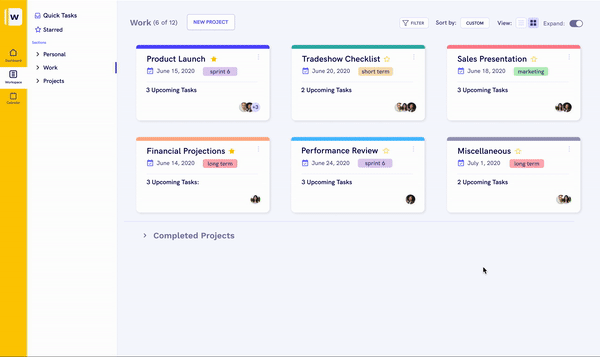
Workspace page - Access the full site here!
Creating the most efficient user interview process
Our main goal this summer as designers was to user test the site and make any adjustments before our partners started beta testing the site in the fall. Because we were working with a team of three developers, we only had had around four weeks to finish the web designs in order to give the developers enough time to implement any changes.
Due to our limited time frame, we needed to make user testing as efficient as possible. We wanted to get as much feedback within these one hour testing sessions, since we wouldn’t have time to refine our designs and test again. We spent a lot of time brainstorming on different ways to test our ideas.
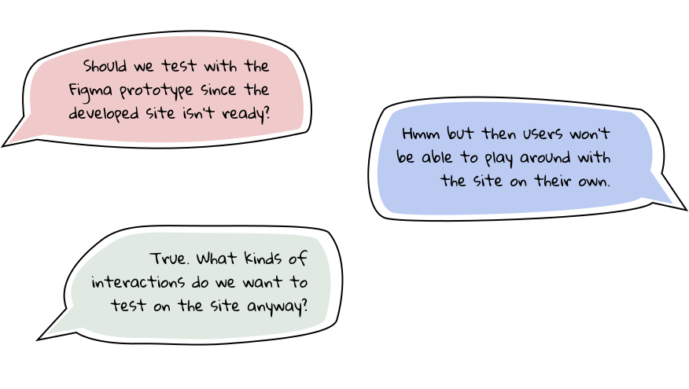
After discussing the pros and cons of testing with the unfinished developed site versus the Figma prototype, we ended up choosing to use the developed site due to the higher level of interaction it would allow our users. We also discussed what types of interactions we wanted to have our users perform and the level of guidance we wanted to give them. We wanted these sessions to be guided enough to where our users had an objective in mind, but not too structured so they couldn’t explore the site on their own. In the end, we decided to give our users a simple task:
Use Whiteboard to plan a birthday party for your friend.
(Main user testing question)
(Main user testing question)
User testing takeaways
We interviewed users within the target demographic of our product - young professionals who are avid planners and enjoy organizing their lives. From these sessions, we drew these four key takeaways:
1) Users wanted overdue tasks displayed separately from their main tasks
In the previous Dashboard view, overdue tasks were displayed within the same section as a user’s current tasks. A lot of users felt that having these tasks were distracting, especially if they couldn’t be checked off immediately, leaving this lingering overdue task there in front of them.
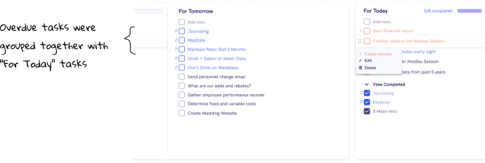
2) Users liked the Dashboard project modal better than the Workspace modal
When we split up the design responsibilities of the platform during Spring 2020, there were three designers, and each of them took one page of the app (the Dashboard, Workspace, and Calendar). As a result, there were small stylistic differences in how each page was designed. During our interviews, a lot of users demonstrated preference for the Dashboard project modal versus the Workspace project modal, since they were able to visualize their project’s progress.
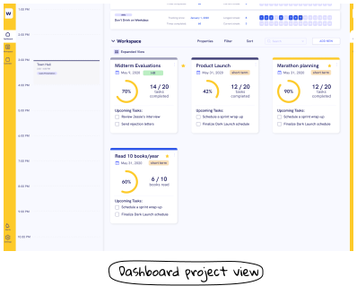
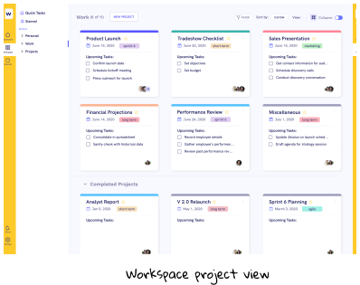
3) Users wanted their scheduled tasks to also display in the “For Today” section
Coming into user testing, we noticed that the consistency between the Dashboard and the Calendar “Activity Bars” might not be the most intuitive for users. On both pages, users could drag tasks from the Activity Bar into the calendar, causing them to disappear from the Activity Bar. However, users didn’t seem to understand this relationship on the Dashboar page; and many users asked why the scheduled tasks on their calendar didn’t also show up in their Dashboard activity bar.
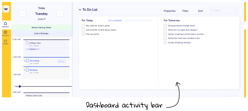
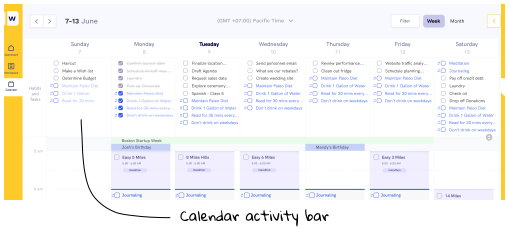
4) Users wanted to be able to create/view their quick tasks from anywhere in the site
One of the main pieces of functionality on the Calendar page is the ability to create “Quick tasks,” which can be dragged into the user’s calendar. However, the Workspace and Dashboard pages didn’t have this functionality. Users really liked this Quick Tasks section and expressed interest in being able to create/view Quick Tasks from anywhere in the site.
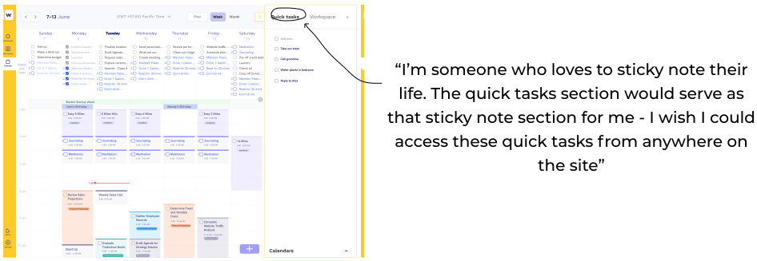
Time to design (quickly!)
Now we have all these insights. Do we even have time to make these changes? After finishing user testing, we essentially had a week and a half to make any design changes before our self-imposed design freeze by week 5.
Start easy….
We started with the easy fix. Users seemed to share a preference for the project modal on the Dashboard page, since the Dashboard modal let them visualize project progress. Since we wanted to keep the site consistent among pages, I creaed a new grid view on the Workspace page that included the Dashboard modal instead.
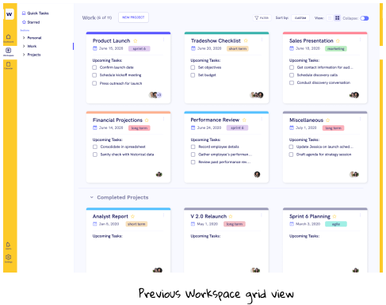
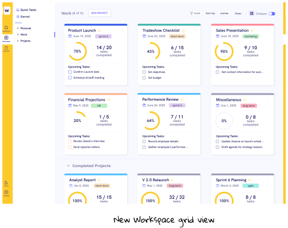
Continue with medium….
The next two considerations were slightly more complex, but with a few iterations and additions we got to changes we were satisfied with. To get rid of overdue tasks from the “For Today” section on the Dashboard, I played around with a few different overdue views. After talking with the rest of the Whiteboard team and the other designers in DALI, we decided to go for the view with the overdue tasks in the top right section.
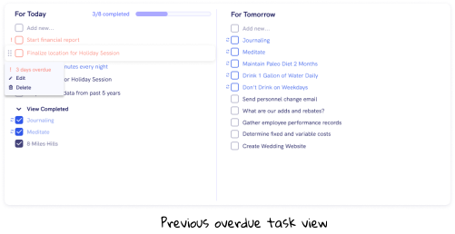
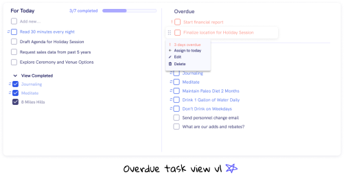
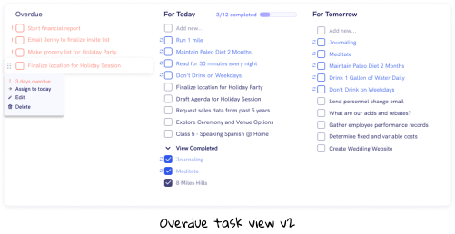
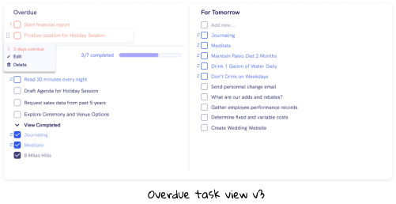
When deciding how to adjust the “Activity Bar” section so that it would be more intuitive for users, we struggled with the concept of breaking consistency between the two pages. On the Calendar Page, users didn’t want their tasks to show up in both the Activity Bar and the calendar; but on the Dashboard Page, users did want their tasks to show up in both places.
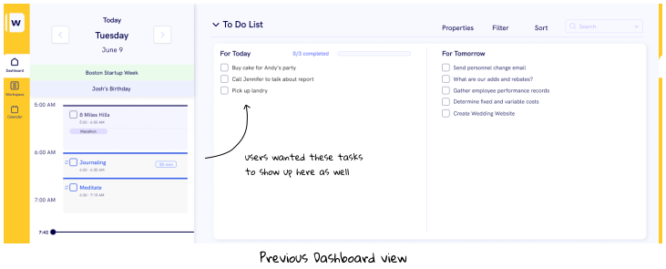
While we did care about consistency among the pages, we realized that creating a seamless experience for our users was much more important. The reason we cared so much about consistency was to create an intuitive user experience, so there was no point in keeping it if it was just going to confuse our users. Instead, I played around with different labels and views, and ultimately decided to add a little calendar icon next to scheduled tasks and habits. Additionally, we decided to rename the entire section from the “Activity Bar” to the “To Do” section, in order to avoid confusion.
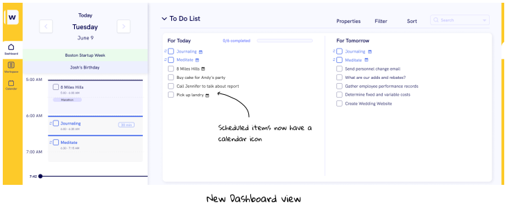
...But don’t finish the difficult?
The last main user feedback that we recieved was the desire for an accessible “Quick Tasks” section from anywhere on the site. One user viewed “Quick Tasks” essentially as Sticky Notes, which he could create any time he had a random thought. We tried to play around with different “Quick Task” views, but struggled to fit them into the current designs. Especially on the Dashboard where there was already a “To Do” section, we thought that having a “Quick Tasks” section could cause some confusion for users.

After exploring different options (a separate Quick Tasks page, an accessible Sticky Note board in the top right corner of the site, etc.), we realized that adding this functionality would be a major UX change, and we wouldn’t have time to user test different views before our upcoming feature freeze. As the project manager for the project, I had to balance the pros and cons of pushing our design freeze just to test this one feature that might not even fully get fleshed out. In the end, we decided that this decision was one that could wait until Beta testing and incorporated into the next round of designs.
What’s next?
After our design freeze, we spent the rest of the term working on mobile designs, per our partner’s requests. We built out the main pages of the mobile app and general flow, but we plan on waiting until after Beta testing to see which specific features users value most to aid in our mobile design choices.
Whiteboard launches its Beta version for testing this fall, and we’re excited to see all the user feedback that comes from it. Having worked on this project for six months, it was so exciting to see all the amazing work of the designers and developers on the team come to life. Hopefully our work will allow our partners to achieve their vision of helping individuals maximize productivity and accomplish their goals (try it out here!).